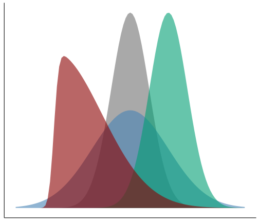

Descriptive statistics
Revealjs Presentation
If you want to see the presentation in full screen go to Other Formats on the right.
Preface: Software I
- The following packages are used:
- Install packages when not already installed:
Preface: Software II
Print list of packages and cite them via Pandoc citation.
Show/hide fenced code
- merTools (v0.6.1, Knowles et al., 2023)
- sn (v2.1.1, R-sn?)
- knitr (v1.44, Xie, 2023)
- flextable (v0.9.4, Gohel & Skintzos, 2023)
- psych (v2.3.9, Revelle, 2023)
- ggplot2 (v3.5.0, Wickham et al., 2023)
Preface: Data matrix
Variables (e.g., characterisics), units (e.g., persons) and data (e.g., measurements) are often presented in matrix form. A matrix is a system of \(n \cdot p\) quantities and looks like in the following:
\[ \begin{bmatrix} X_{11} & X_{12} & \cdots & X_{1p} \\ X_{21} & X_{22} & \cdots & X_{2p} \\ \vdots & \vdots & & \vdots \\ X_{n1} & X_{n2} & \cdots & X_{np} \end{bmatrix} \]
- \(n\) rows; 1 row is also known as a vector or row matrix
- \(p\) columns; 1 column is also known as a vector or column matrix
see Eid et al. (2013)
Descriptive statistics: Overview
- Measures of variability
- Standard deviation
- Variance
- Range (Minimum, Maximum)
- Measures of shape
- Skewness (not covered in slides)
- Kurtosis (not covered in slides)

Mean
How to calculate the mean in R?
Code
mean(exVec)[1] 3.8If there is missing data (in R denoted by NA), we set the argument na.rm to TRUE. To demonstrate this we create another example vector (exVec2).
Code
exVec2 <- c(1, 2, 5, 3, 8, NA)
mean(exVec2)[1] NACode
mean(exVec2, na.rm = T)[1] 3.8Median
How to calculate the median in R?
Code
median(exVec)[1] 3Variance
How to calculate the variance in R?
Code
var(exVec)[1] 7.7Standard Deviation
How to calculate the standard deviation in R?
Code
sd(exVec)[1] 2.774887Range
How to calculate the range in R?
Code
range(exVec)[1] 1 8Alternatively, calculate the minimum…
Code
min(exVec)[1] 1… and the maximum.
Code
max(exVec)[1] 8And to compute the range apply Equation 7.
Code
max(exVec)-min(exVec)[1] 7Put everything together I
Recall, the dataset dat is the HSB dataset from the merTools package:
Code
dat <- merTools::hsbCalculating the mean, standard deviation, minimum and maximum for a set of variables:
Code
- 1
-
Create a (named) character vector of the variables by using the
c()function. - 2
-
Use the
applyfunction to apply a or multiple function(s) on data (here: 4 columns). - 3
- The input is the dataset with the selected columns of interest (see 1.).
- 4
-
MARGIN = 2indicates that the function should be applied over columns. - 5
-
Create the function that should be applied. Here we calculate the
mean(),sd(),min()andmax(). - 6
-
Create a temporary
Robject, which should be later returned (here: the vectorret) - 7
- Return the temporary object and close functions.
Put everything together II
Print the results…
mathach female ses size
[1,] 12.747853 0.5281837 0.0001433542 1056.8618
[2,] 6.878246 0.4992398 0.7793551951 604.1725
[3,] -2.832000 0.0000000 -3.7580000000 100.0000
[4,] 24.993000 1.0000000 2.6920000000 2713.0000
This is a weird format; variables should be in rows not columns. Transpose…
Better, but still not really convincing…
Making a table I
Code
1exDescrTab <- exDescr |>
2 t() |>
as.data.frame() |>
3 (\(d) cbind(names(myVar), d))() |>
4 flextable() |>
5 theme_apa() |>
6 set_header_labels(
"names(myVar)" = "Variables",
V1 = "Mean",
V2 = "SD",
V3 = "Min",
V4 = "Max") |>
7 align(part = "body", align = "c") |>
align(j = 1, part = "all", align = "l") |>
8 add_footer_lines(
as_paragraph(as_i("Note. "),
"This is a footnote.")
) |>
align(align = "left", part = "footer") |>
9 width(j = 1, width = 2, unit = "in") |>
width(j = 2:5, width = 1, unit = "in")- 1
-
Take the results (here:
exDescrobject)… - 2
-
…and
transpose(i.e., using thet()function) and coerce it to adata.frameobject (as.data.frame()) - 3
-
Use the so-called lambda (or anonymous) function to bind (using the
cbind()function) the variable names as the first column to the dataset. - 4
-
Apply the
flextable()function. - 5
-
Use the APA theme (
theme_apa()). - 6
-
Rename the column names (
set_header_labels()). - 7
-
Center body part of the table (
align()). - 8
-
Add a footnote (
add_footer_lines) and align it to the left. - 9
-
Change column width (
width) to 2 resp. 1 inch.
Making a table II
Print the table.
Table export
If you want to export the table…
Descriptive statistics with the psych package
Alternatively, it is convenient to use additional
Rpackages such as thepsychpackage (Revelle, 2023) to calculate descriptive statisticsHere we use the
describefunction (with thefastargument set toTRUE) to calculate the descriptive statistics of all variables within the example data set
vars | n | mean | sd | min | max | range | se |
|---|---|---|---|---|---|---|---|
1 | 7,185 | 0.2747390397 | 0.4464137 | 0.000 | 1.000 | 1.000 | 0.005266525 |
2 | 7,185 | 0.5281837161 | 0.4992398 | 0.000 | 1.000 | 1.000 | 0.005889736 |
3 | 7,185 | 0.0001433542 | 0.7793552 | -3.758 | 2.692 | 6.450 | 0.009194372 |
4 | 7,185 | 12.7478526096 | 6.8782457 | -2.832 | 24.993 | 27.825 | 0.081145473 |
5 | 7,185 | 1,056.8617954071 | 604.1724993 | 100.000 | 2,713.000 | 2,613.000 | 7.127669715 |
6 | 7,185 | 0.4931106472 | 0.4999873 | 0.000 | 1.000 | 1.000 | 0.005898555 |
7 | 7,185 | 0.0061384830 | 0.4135539 | -1.188 | 0.831 | 2.019 | 0.004878864 |
Exercise
Style the table according to your ideas/demands.